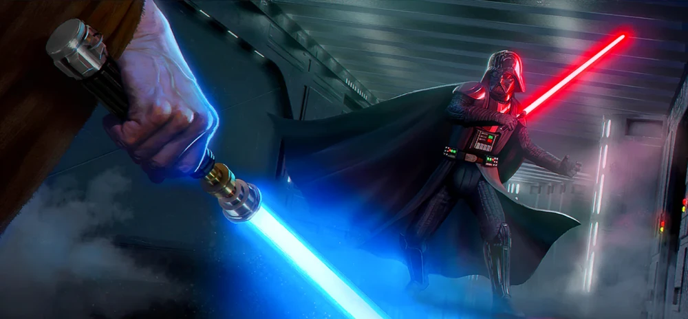

Au cours de l'histoire de l'Ordre Jedi, le sabre laser était considéré comme le seul véritable allié des Jedi au combat. Comme l'a déclaré un jour Maître Obi-Wan Kenobi à son Padawan Anakin Skywalker à la fin de la République, le sabre laser était la vie d'un Jedi.
Les Jedi considéraient le sabre laser comme le symbole de la prudence avec laquelle ils devaient manier les dons que leur avait accordés la Force, mais aussi comme un message à leurs adversaires : la maîtrise du sabre laser exigeait une grande habileté et un entraînement intensif.
Le choix du sabre était également le symbole de leur rôle et de leur devoir en tant que protecteurs, et non destructeurs, et du fait que les Jedi ne recherchaient pas le pouvoir, mais cherchaient seulement à s'opposer fermement aux ténèbres. Néanmoins, les Jedi savaient qu'ils devaient être plus .
Lorsque la Padawan Enya Keen perdit son sabre laser lors d'une mission à Dalna, son maître, Char-Ryl-Roy, lui rappela qu'elle devait agir en tant que Jedi sans cette arme.
Même si trouver un cristal kyber restait une partie sacrée du devoir d'un Jedi et que Keen avait l'impression que perdre son sabre laser revenait à perdre une partie d'elle-même, elle accepta volontiers de donner le cristal si cela lui permettait d'en savoir plus sur la Voie de la Main Ouverte et ses plans.
Les sabres laser prirent une place plus importante dans les affaires galactiques à mesure que la Guerre des Clones avançait. Les Jedi, qui étaient auparavant des gardiens de la paix, devinrent des généraux Jedi de la Grande Armée de la République et commencèrent ainsi à utiliser leurs sabres laser plus souvent que lorsqu'ils jouaient leur rôle de gardiens de la paix.

Époque impériale
Après la défaite de l'Empire, Luke commença à former une nouvelle génération de Jedi.
Tano adopta la Mandalorienne Sabine Wren comme Padawan, et Wren prit le sabre laser de Bridger comme sien.
À la suite du conflit sur Peridea, tous deux se retrouvèrent bloqués dans une galaxie lointaine, car le Grand Amiral Mitth'raw'nuruodo « Thrawn » était de retour.
Bridger, muni d'un nouveau sabre laser, réussit toutefois à revenir dans la galaxie.
La nouvelle génération de Jedi de Skywalker a été tuée lors de la destruction de son temple Jedi, conduisant une fois de plus à une époque où le seul utilisateur de sabre laser de premier plan était un adepte du côté obscur, Kylo Ren.
Tout cela a changé lorsqu'une ferrailleuse, Rey, a découvert le sabre laser de Skywalker et a finalement été formée par Luke Skywalker et sa sœur jumelle Leia Organa pour combattre Kylo Ren et le Premier Ordre lors d'une guerre contre les successeurs de l'Empire.
Après la guerre, Rey a rituellement enterré les sabres laser de ses maîtres à la ferme Lars, sur la planète natale de Luke, Tatooine, afin de mettre fin aux souffrances de la famille Skywalker. Elle a allumé son nouveau sabre laser pour montrer son parcours complet en tant que Jedi et, pour honorer l'héritage des Skywalker, elle a pris le nom de Skywalker comme nom de famille après avoir reçu la bénédiction des esprits de la Force de ses maîtres lorsqu'un habitant lui a demandé.